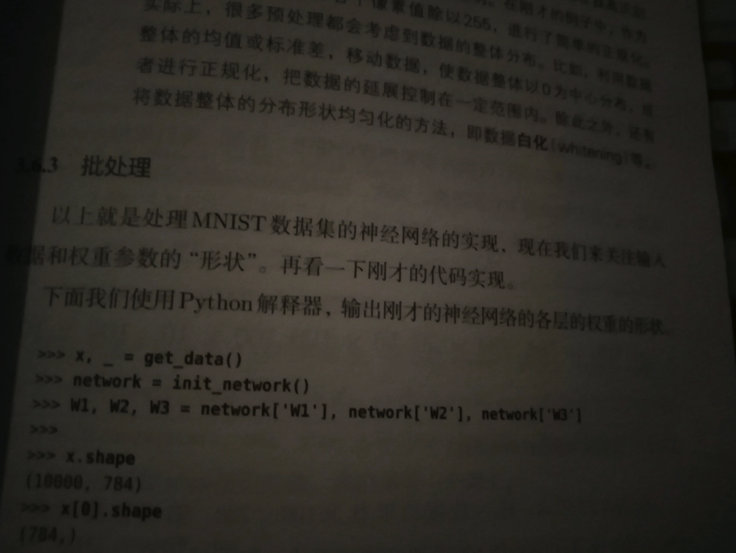
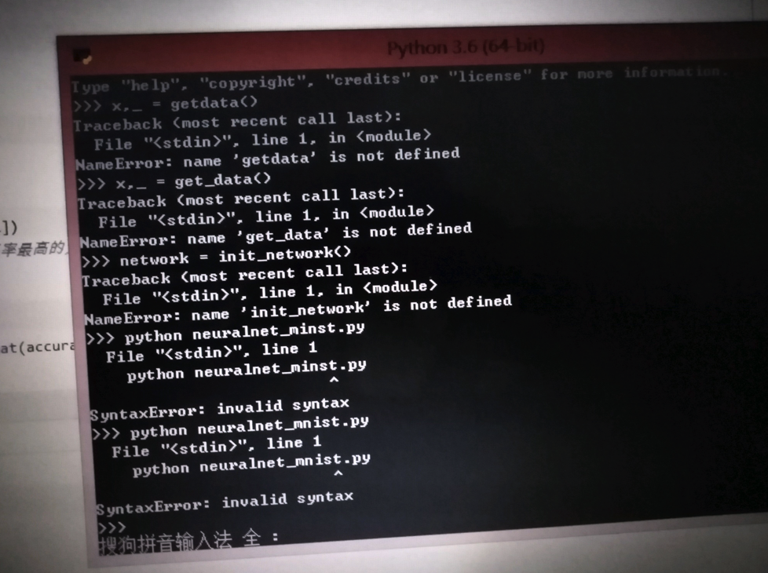
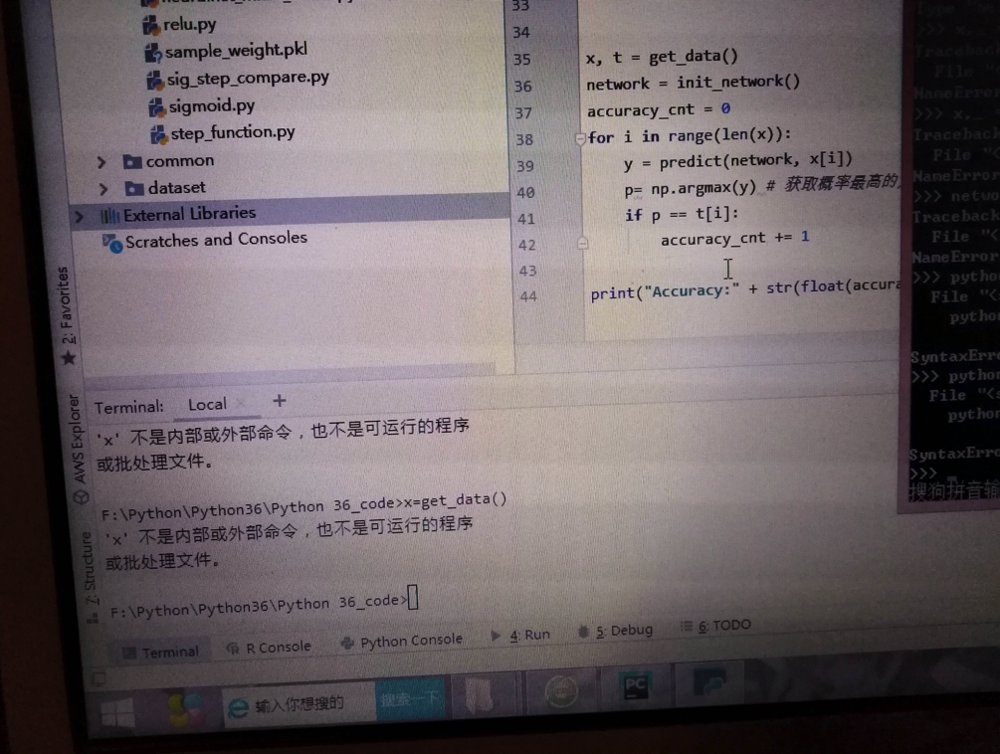
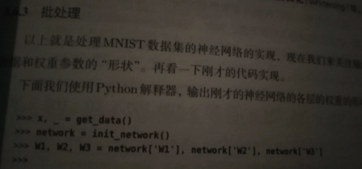
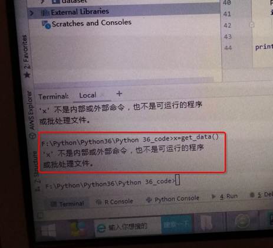
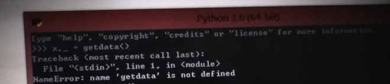

Python的shell不是系统终端
此处通过例子来说明，使得新手和小白明白，系统的终端shell和Python shell不是一个东西。
这个概念需要搞清楚，然后才能正常开发。
举例
关于python解释器的问题
问题
这个教材说用python解释器执行如下代码，我使用的是pycharm，然后用了terminal告诉我没有这个命令
然后，我用cmd也不行
然后用python3.6的那个终端，还不行
之前，也遇到过这种状况，就是terminal必须弄一个虚拟环境才能运行整个库
我很无奈，就是想问问如何使用终端生成这个东西!



解答
- 简答：
- 你
- 先要搞清楚，书中代码是python shell中运行的
- 其次还要搞清楚，那段get_date()代码，是需要先输入函数定义，才能继续调用执行的
- 都搞清楚后
- 就可以在python shell中输入完整代码，去测试你要的效果了
- 你
- 详解：
对于图片：

很明显是从书中拍的照片
而其中的：
>>> x, _ = get_data()
>>> network = init_network()
...
等内容，是：在Python的shell中去测试的代码
对此先要去搞清楚：什么是Python的shell
你此处：
截图的书中的代码：
x, _ get_data()
network = init_network()
...
明显是，用来放到Python shell中才（可）能运行。
所以你说的：
这个教材说用python解释器执行如下代码，我使用的是pycharm，然后用了terminal告诉我没有这个命令
好像对应是这个截图：

x=get_data()
‘x’ 不是内部或外部命令，也不是可运行的程序或批处理文件
回答你这句之前，先要给你解释清楚，即你先要明白，要搞清楚：
以及再需要去搞清楚：什么是系统的终端
然后，我用cmd也不行
至此你也（应该）明白了，理解了，此 PyCharm的终端=系统的终端 不等于 Python的shell终端
也就没法直接运行你的Python代码了。
然后再去搞懂对比：Python的shell对比系统的终端
然后用python3.6的那个终端，还不行
你说的应该是：

很明显，此处：
- 你不仅（粗心，笔误）把get_data()误写成getdata()
- 还不理解：Python中代码执行的基本逻辑
- get_data()是个函数的调用
- 需要你先把函数实现=函数定义 写出来，或者是导入别的实现了此函数的库
- 然后才能去调用此函数，运行此函数
- 需要你先把函数实现=函数定义 写出来，或者是导入别的实现了此函数的库
- get_data()是个函数的调用
在具体点说就像是，你能运行：
x, _ = get_data()
的前提是，前面已有类似get_data()的具体实现，类似于：
def get_data()
...
return x, y
然后你才能调用：
x, _ = get_data()
否则，当然，也就会报错：
NameError: name ‘getdata’ is not defined
中文翻译为：
名字错误：getdata这个（变量或函数的）名字没有定义
之前，也遇到过这种状况，就是terminal必须弄一个虚拟环境才能运行整个库
其实你说的，大意是对的，但是细节上的逻辑还是不严谨的
其实不是 “弄一个虚拟环境” 才能运行整个库
至少对于前面这几行要测试的代码，则只是：
先要确保你的get_data()函数有定义了，你已经在Python的shell中输入了get_data()的定义了，或者导入了相关的库，然后
x, _ = get_data()
这行代码才能正常运行
类似的后续代码，也都要：对应函数有定义，才能正常运行。
我很无奈，就是想问问如何使用终端生成这个东西!
就是按照我前面所说的：
找到get_data()等函数的定义，输入到终端中
（且确保当前Python环境是OK的，即相关依赖的库已安装等）
然后就可以在终端中（输入代码，运行代码）生成（你要的）这个东西了。
不过话说关于Python入门开发的IDE的选择，我多年前就不推荐用IDLE：
小白用户，不要用python的shell或IDLE，而是去用编辑器或IDE去开发Python
详见：
- 4.1.4.1. 对初学者的建议：如何选用Python的开发环境
- 注
- 可以把
Windows的cmd + Notepad++
- 改为：Windows的cmd + VSCode
- 其中关于VSCode开发Python，可以参考最新的：
- 可以把
- 注
以及不了解开发方式的小白，可参考我之前写的：
中的：
- 4.1.1. Python的最原始的开发方式是什么样的
- 4.1.2. 利用Python的shell进行交互式开发又是什么样的
- 4.1.3. 利用第三方Python的IDE进行Python开发又是怎么回事
看完后，相信你会对Python开发的编辑器，IDE等概念有个更加充分的认识。
之后就不会出现此提问者这种对于概念混淆的问题了。